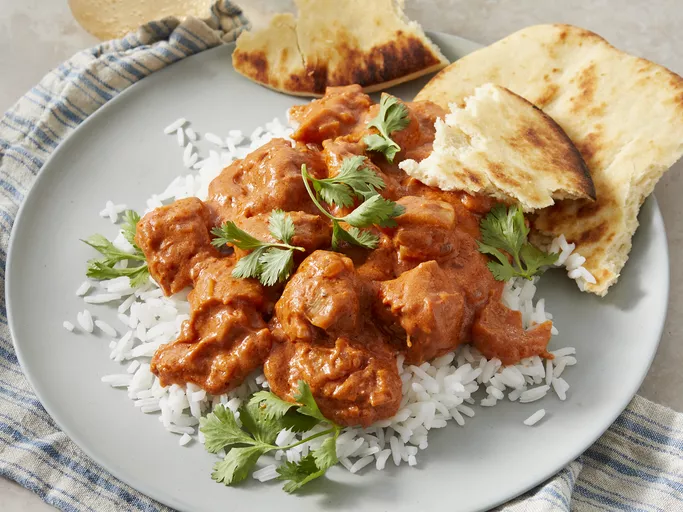
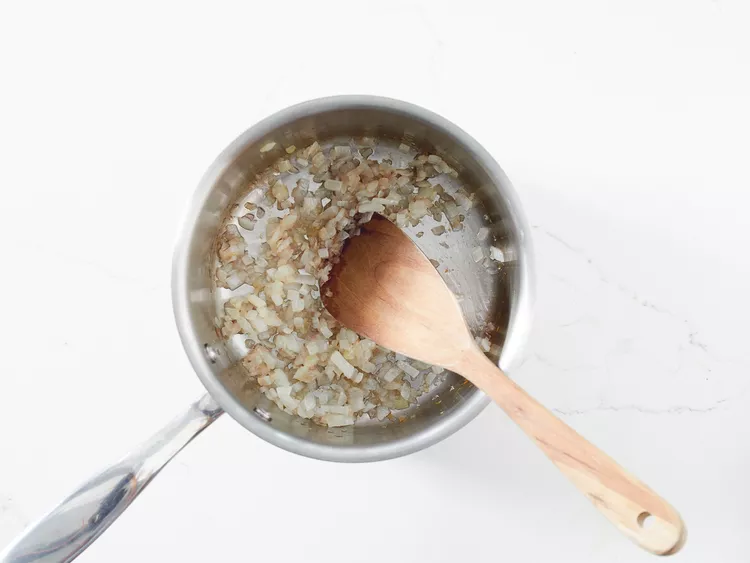
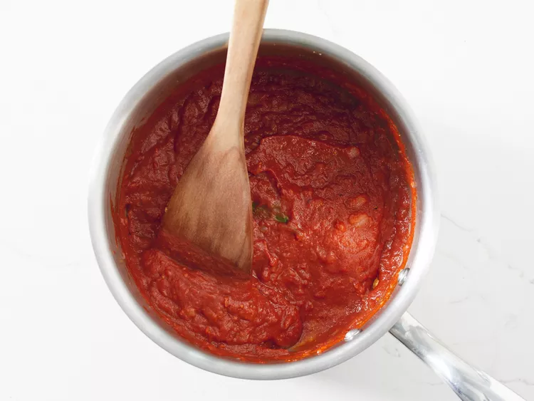
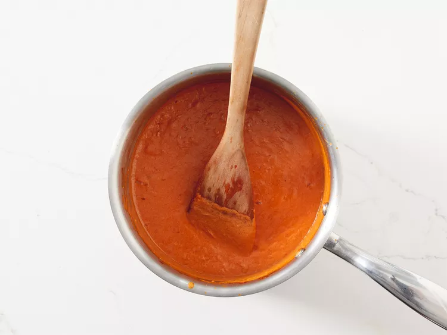
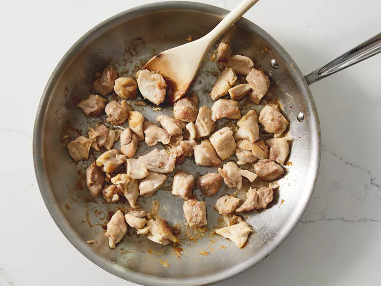
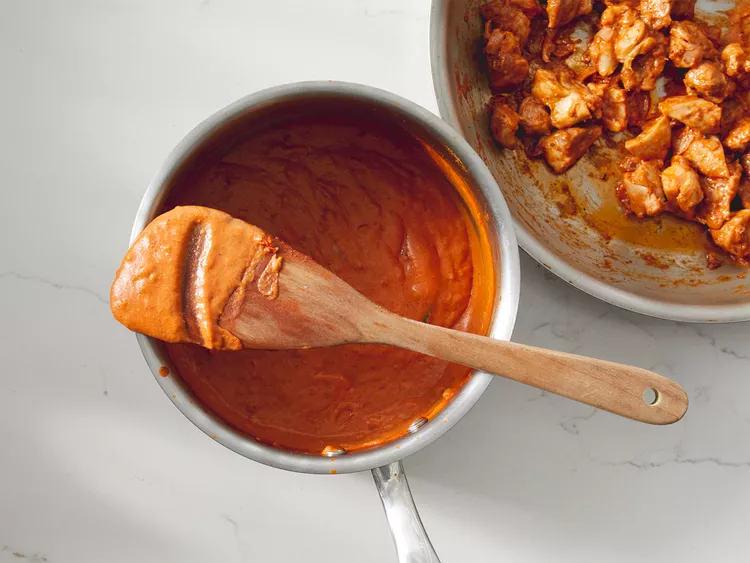
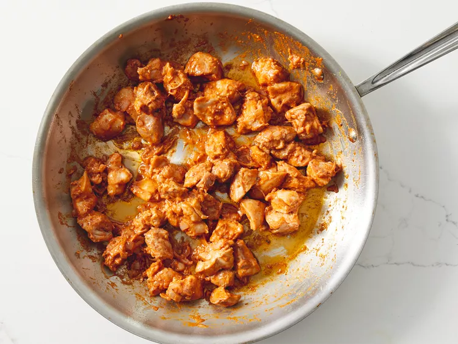

The buttery Butter chicken.

More about the Crazy Good Indian recipie!
Butter chicken, also known as Murgh Makhani, is a classic Indian dish featuring tender chicken in a rich and creamy tomato gravy. The sauce is flavored with spices like garam masala and cumin,
and gets its signature smooth texture from butter and sometimes cream. It's a crowd-pleasing curry that's not too spicy, making it a favorite among many.
Ingredients
- 2 tablespoons peanut oil, divided
- 1 shallot, finely chopped
- ¼ white onion, chopped
- 2 tablespoons butter
- 1 tablespoon ginger garlic paste
- 2 teaspoons lemon juice
- 2 teaspoons garam masala, divided
- 1 teaspoon chili powder
- 1 teaspoon ground cumin
- 1 bay leaf
- 1 cup tomato puree
- 1 cup half-and-half
- ¼ cup plain yogurt
- 1 pinch salt and ground black pepper to taste
- 1 pound boneless, skinless chicken thighs, cut into bite-size pieces
- ¼ teaspoon cayenne pepper, or to taste
- 1 tablespoon cornstarch
- ¼ cup water
Directions
-
Heat 1 tablespoon oil in a large saucepan over medium-high heat. Sauté shallot and onion until soft and translucent, about 5 minutes.

-
Stir in butter, ginger-garlic paste, lemon juice, 1 teaspoon garam masala, chili powder, cumin, and bay leaf. Cook and stir for 1 minute. Add tomato sauce, and cook for 2 minutes, continuing to frequently stir.

-
Stir in half-and-half and yogurt. Reduce heat to low, and simmer for 10 minutes, frequently stirring. Season with salt and pepper. Remove from heat and set aside

-
Heat remaining 1 tablespoon oil in a large heavy skillet over medium heat. Cook chicken until lightly browned, about 10 minutes.

-
Reduce heat, and season with remaining 1 teaspoon garam masala and cayenne. Stir in a few spoonfuls of sauce, and simmer until liquid
has reduced, and chicken is no longer pink. Add cooked chicken into sauce and stir together.

-
Dissolve cornstarch into water, then mix into the sauce. Cook for 5 to 10 minutes, or until thickened.

-
Serve over rice with naan.
back to main page